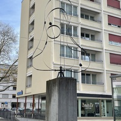
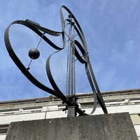
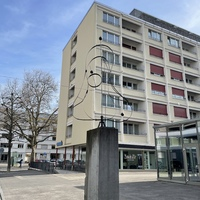
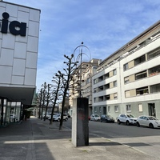
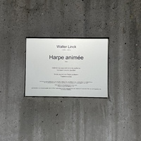

Walter Linck, Harpe animée (1961-1962)
Objekt
Titel
Walter Linck, Harpe animée (1961-1962)
Beschreibung
Rythme et vibration. L'œuvre réagit au courant d'air, aux secousses et aux vibrations. Grâce à l'utilisation de bandes élastiques en acier à ressort, Linck parvient à une construction poétique.
Liste der Autoren
Christopher Kilchenmann
Urheber
Walter Linck
with Role
Archivar:in
Format
Kunstwerk
Zeitlicher Geltungsbereich
1962 3. ESS-SPA
Thema
Skulptur
shortDescription
#L‘art en Public
#L'art à Bienne
#Kino Palace Bienne
#Walter Linck
#L'art à Bienne
#Kino Palace Bienne
#Walter Linck

E7511422-E759-4FB6-9898-F2CC929DB8D5.jpeg
AFA6078F-587C-49A1-B5EF-C5FAF344A843.jpeg
B5230C43-D0F6-43F0-A56D-5701B9D205B8.jpeg
1F33C8C0-67AB-4301-AFEF-7FD7A6E7DF47.jpeg
4879B241-5CFE-4F30-9955-4B24E27F4646.jpegThis item was submitted on April 13, 2023 by [anonymous user] using the form “Beitrag hochladen” on the site “Öffentlichkeiten der Kunst”: https://www.publics-arts.ch/s/oedk
Hier klicken, um die gesammelten Daten zu sehen.